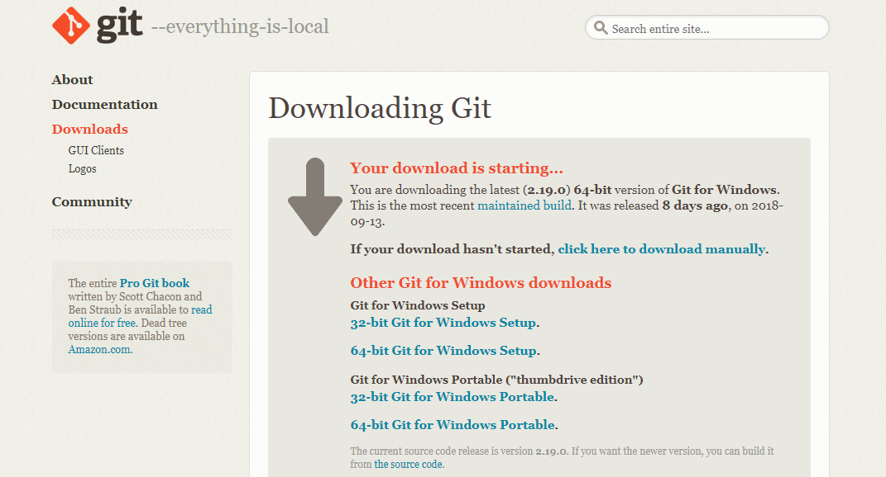
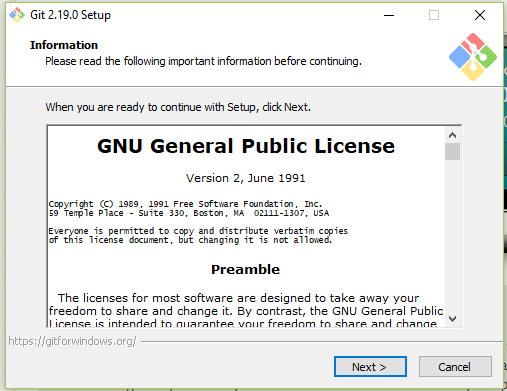
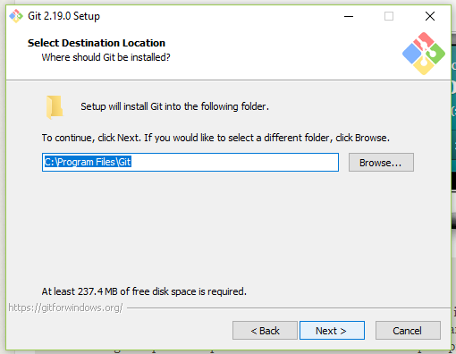
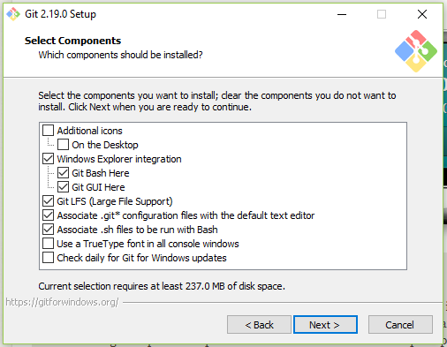
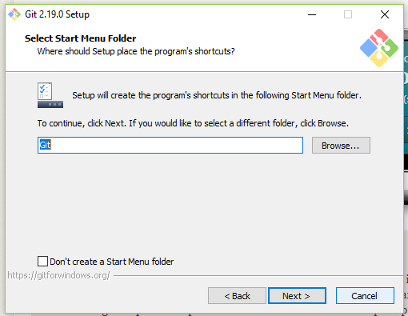
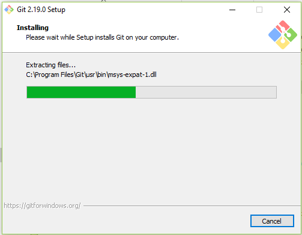
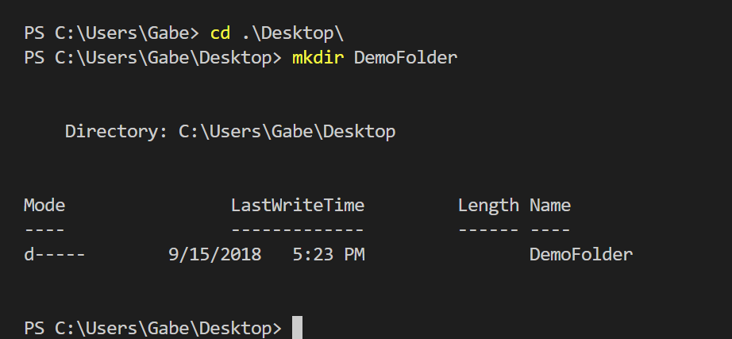
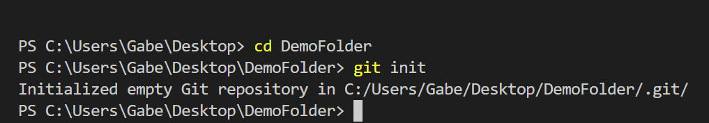
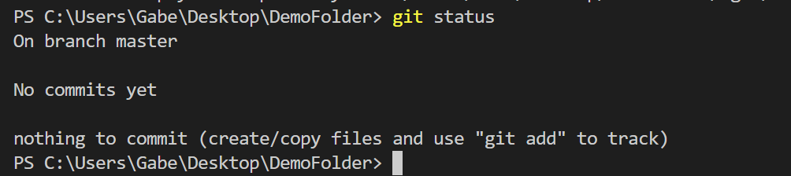
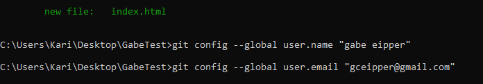

Introduction and Assumptions
Thanks for looking at my introductory Git Guide. I recently went from zero
to greater than zero with regards to my Git skills thanks to the guidance
of others and I want to help others do the same thing. I hope you find this
guide helpful. This is not a comprehensive guide to all beginner skills. This
is simply a guide that can walk you through how to implement GIT into your
regular workflow with minimal fuss and command memorization.
- You have a computer
- You have a code editor installed
- If you don't have a code editor installed
you will go download one and then return
- I like Visual Studio Code.
There are many good ones out there.
Just pick one you have heard of and try it.
- You know how to write some code of some kind
- You have a Github account
- If you don't you might as well get one because it is free
- This is optional.
Only half of what we will be covering will be pointless
if you don't.
Introduction and installation
All right lets get going! What is GIT? It is a free open-source
Version Control system. What does that mean for you? There are
a lot of different really good reasons to use GIT. The simplest
answer in my opinion is that GIT allows you to fearlessly play,
change, and experiment with your code without any fear of breaking
your code. And it allows simple efficient social coding. If you are
going to work professionally with code you will probably need to learn
it.
So, first thing is downloading GIT
for Windows

Once
the download finishes choose a folder to save it to. When this is
finished go to the file where you saved it to and click on the executable
file. This will initiate the installation process.

Once you accept the
terms it will create a GIT folder in your Programs folder. You should
accept the default settings.

Next it will give you some checkboxes for whether
you want the a desktop shortcut, a GIT GUI (or graphical user interface),
and other options. I recommend doing whatever you want but don't unselect
the automatic options.

Next you can choose your a folder name in the Start Menu. This is really
just where you would go to look for GIT. If you are like me simple is
better and you will just leave the file name GIT.

Now we choose wether we want to use the GIT Bash (terminal) only or
Windows Command Prompt (the windows terminal). There is a third option that you
will want to ignore because it is the most risky option. The Git Bash is a GIT
terminal that allows you
to enter commands. This option is the safest. I would stick with the default
Windows terminal because this lets you use either the GIT Bash or the Windows
Terminal and is nearly as safe.

Now just leave the rest of the options on the
default settings and click next until it begins installation. If any
of these choices matter I don't know about it and you can teach me!

Once the installation finishes
you can select the checkbox that says to open the GIT Bash.

If you are using
Visual Studio Code you can actually just open the Code editor and type Control - Plus -
Back-tick. (The back-tick is the key to the left of the 1 key.) This opens the
integrated Visual Studio terminal.
Say Hello To Your Terminal!

This is a terminal. It is also called the CLI or Command Line Interface. A terminal looks
like an ancient computer. But in spite of the fact that it is a total blast from the past
it is going to rock your developing mind.
If you look at the screen you will see 'C:\Users\Gabe'. This actually mirrors the folder
structure of your computer. We are in the LocalDisk(C), the Users folder, and I am logged in
to my Personal Computer so we see my name username (which is my name) Gabe.
Ok how do we move around and do anything? We can move around by selecting the folder we want
to go to. It is helpful to know the folder name. But if you didn't memorize all the folders
inside your computer it isn't quite so simple. But we have a command to see where you are. Type
dir into the terminal and hit enter.

The dir command is short for directory. It shows you the contents of the directory
(or folder) you are currently in. So now you know what all your folder names are.
So lets pick a folder. To go into a folder type cd FreeCodeCamp. CD stands for 'Change
Directory' and FreeCodeCamp is the name of the folder I selected. You can always prompt the terminal to
auto-complete the folder name by hitting Tab. If the terminal has options and it guessed wrong you can
keep hitting tab until you see the right folder name. When you see the correct folder name
or you finish typing it hit Enter.

Now you see the list of folder names includes Free Code Camp. This list of folder names just
tells you where in your folders you are. The last folder listed is the one you are currently in.
You navigated in the terminal! To go back one level type cd ... This time instead of
using the change directory command to go into a folder you are using it to back out of your folder you
are in to get to the parent folder.

Now you are back in the Gabe folder where we started. This is how you navigate around the
terminal. When you want to use GIT on a group of files you want to navigagte to the folder
in question. See you in the next section.
So now we know how to navigate around our files and we have GIT installed. So first we are going
create a directory. So pick a location for this new file.
Now use your cd command and navigate to the folder where you want your new folder to
be located. Now enter mkdir DemoFolder. DemoFolder should be whatever you want your
new folder to be named.

And now we see a summary below. We see a line that tells us what our folders parent folders are.
And below this we see a summary of our last time we made changes to (or created in this case) our
folder and the name of our new folder DemoFolder.
Now we can go into the folder we created. Now that we are in our folder we can initiate GIT. We
do this with the git init command.

What does this mean? On a technical level I don't know entirely. Don't overthink it. Basically
your should think of this as similar to installing an app on your device. You have to do it to use it.
With GIT you have to install it For every device you use it on. And you have to initiate it in every
folder you want to use it with. As a rule you will pick your project's primary folder that will
contain all the files and folders associated with it and initiate GIT in that folder.
So initiating GIT basically adds GIT to the folder your are in and this will allow you to use
GIT to track your files inside this folder. git init also creates a Master branch
for you automatically. So what are branches? Basically branches are what allow you to have
and keep organized multiple versions of your code. The Master branch is the default branch.
Typically you want to keep your Master branch uncluttered. If you want to try something that
might not work you make a separate branch to mess with it. Each time you make a branch you
are making a duplicate of the branch you were in. Then you write some code, decide if you
are keeping it or ditching it. You can merge it back into a branch which will adopt your changes.
So how do we know we have a master branch?
Let us use the git status command.

This is a really useful versatile command. It will tell you what is going on with regards to GIT.
For example we have GIT initiated in our empty DemoFolder. We can tell that GIT is
active because we see a status update. We are on Branch Master. No Commits yet. Commits are how
changes are packaged up. And below that we see there is nothing to commit. Since we just created
an empty folder that seems about right!
So in this section we are going to use the git config command to set up GIT.
config is obviously an abbreviation for configure. So we are telling GIT that we
want to configure our global settings. So we are going to first enter this command git
config --global user.name "User name" with your name in the quotation marks. Then
hit Enter. As long as you don't see an error command this worked. Now we enter git
config --global user.email user@example.com with your email address.
